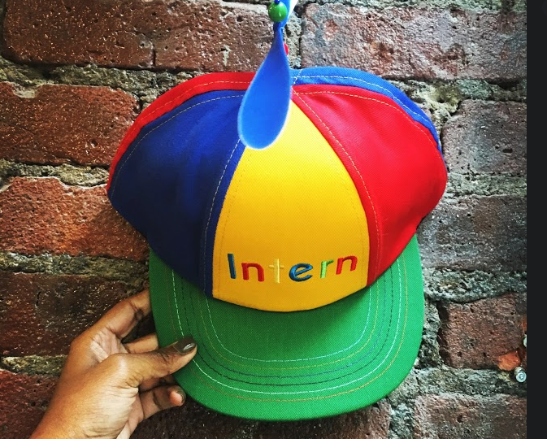

Zoe represents "life" and that best describes my personality.
I am an easy going funny Chicagoan that enjoys watching international television shows.
I recently completed the final season of GoT and was left wanting a season 9.
There were story lines that were left unfinished and Aria could have had a spin off show
called "The Girl is No One". I like to problem solve. I like thinking about systematized ways
of solving problems. When I was a little girl, I liked to watch Dora the Explorer and what
fascinated me most was her ability to use her skill set to find solutions within her
surrounds. Friendship is very important to me. I value the connections I have made with
people on my educational journey as they increase my level of happiness, provide support
during stressful situations, improve my self-worth and confidence. In the words of Winnie
the Pooh,
"a friend is one of the nicest things you can have and one of the best things you can be".

This is Chicago!
He is so curious about the world!
But mostly he's nosey.
He spends his time exploring.
And sleeping in odd positions.
Please feel free to drop some questions, comments, and concerns if you have any: